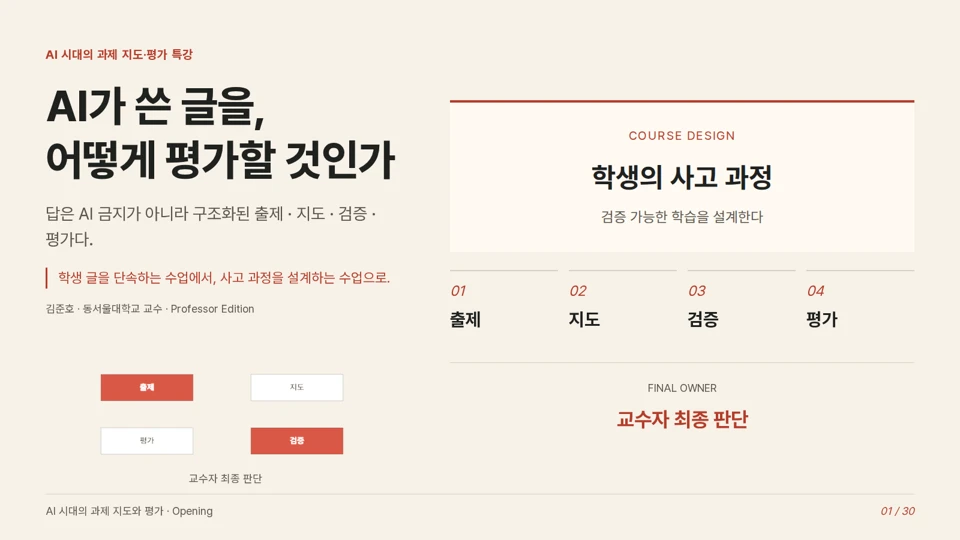

좋다가도
보고 싶어 와 놓고 집에 가고 싶다가도, 말없이 건넨 송편 하나에 잠깐 마음을 접는 추석.
작품 열기Open body
교수 · 저자 · 창작자 · 시스템 설계자Professor · Author · Creator · System Designer
AI에게 판단을 맡기지 않고,AI와 함께 메시지의 몸을 만드는 사람.I do not hand judgment to AI.I work with AI to give messages a body.
미디어융합 전공 공학박사 김준호는 음악, 영상, 출판, 제품, 연구와 사회적 가치를 하나의 인과관계로 연결합니다.Joonho Kim, Ph.D. in media convergence, connects music, video, publishing, products, research, and social value through one causal body.
미디어는 메시지의 몸이다.Media is the body of the message.
홈은 모든 내용을 쌓아놓는 곳이 아니라 각 관계로 들어가는 문입니다.The home page is a set of doors into distinct relationships, not a pile of every detail.
만드는 행위가 어떤 관계와 태도를 갖는지 보여줍니다.How acts of making embody relation and attitude.
생각과 주장이 기록과 증거의 몸을 갖습니다.Ideas and claims take on bodies of record and evidence.
기술과 창작이 나눔의 거리를 줄입니다.Technology and creation shorten the distance to sharing.
판단의 기준과 최종 책임이 한 사람의 태도를 드러냅니다.Criteria for judgment and final responsibility reveal the person behind the work.
노래, 슬라이드, 화면과 이야기가 배포로 끝나지 않고 다음 창작을 바꾸는 기억으로 축적됩니다.Songs, slides, screens, and stories accumulate as memory that changes the next creation.
보고 싶어 와 놓고 집에 가고 싶다가도, 말없이 건넨 송편 하나에 잠깐 마음을 접는 추석.
작품 열기Open body손은 안 댔지만 공은 있네. 재봉틀 바늘을 둘러싼 부부의 수리 소동이 내가에서 우리가로 풀리는 실사 이미지 시네마와 웹툰.
작품 열기Open body
생성형 AI 시대의 격차를 정보가 아니라 판단권과 지휘 능력의 문제로 보여준다.
작품 열기Open body
출제·지도·검증·평가의 전체 구조를 30장 강의와 공간 조립으로 이해하고, 원본과 비교하며 교수자의 최종 판단을 설계한다.
작품 열기Open body
학생이 부품 검사 사례로 감지·판단·행동·검증을 연결하고, 불확실하면 멈추고 사람의 확인으로 다시 검증하는 피지컬 AI 앱을 설계한다.
작품 열기Open body
한 문장에 하나의 판단을 담고 앞 문장을 다음 문장의 기준으로 이어가며, 문장과 장면을 함께 수정하는 단문 인과체인 강의.
작품 열기Open body